Qwen Digit Recall
Compressing a language model makes it smaller and faster. What does that do to an answer that hangs on one exact token, like the 327th digit of π? To find out, I asked 64 versions of three Qwen models, from the uncompressed original down to 2.1 bits per weight, to recite π from memory, copy digits from the prompt, and choose between the two.
How to read this page
- Bits per weight (bpw)
- How many bits each of the model's numbers takes in the file, measured as file size × 8 ÷ number of weights. The original is 16, and fewer bits mean a smaller file with more rounding error.
- Version names
- llama.cpp formats. BF16 is the uncompressed original, and in Q8_0 … Q2_K the number is roughly the bits per weight. IQ formats squeeze harder through lookup tables. us_ marks a file published by unsloth and UD- unsloth's per-layer recipe. _imat means built with an imatrix, a record of which weights matter most. The full story is on How the model files were made.
- Reference, plain ladder
- The reference is what everything is compared against: BF16 for the 4B and 9B, Q8_0 for the 27B. The plain ladder is my own Q8_0 down to Q2_K with no imatrix, so only the bit width changes along it.
- The tests
- E1 recites π, e and √2 from memory, E2 (teacher forcing) measures how sure the model is of each true digit, E3 and E4b copy digits from the prompt, E5 copies π with one digit changed, and E6 recites π as words. Each one, with examples, is on How the experiments work.
- Odds (how sure)
- How many times more likely the right digit is than the runner-up. 1× is a dead heat. 4× is shaky, and 10,000× is certain.
- Noise
- How far a compressed version's predictions drift from the reference's (the KL divergence). 0.0001 gave the same recitations as the reference, about 0.01 stopped π within the first few hundred digits, and 1 or more meant a broken model. "On π" is measured on π's digits, "on random" on random digits nobody can have memorized. Charts plot it on a log scale, where one gridline lower means a tenth of the noise.
| Marker in the charts | Meaning |
|---|---|
| blue circle, joined by a line | plain ladder (our builds, no imatrix) |
| orange square | our build with our own imatrix |
| green diamond | unsloth's published file |
| dark triangle, point up | our build with unsloth's imatrix |
| dark triangle, point down | legacy Q4_0 |
| black star, or dashed black line | the reference |
Only the plain ladder gets a line. The other groups mix formats, and a line through them would draw a trend that doesn't exist. In the chart comparing model sizes, colour means the model instead: blue 4B, orange 9B, green 27B.
Verdicts
| Hypothesis | 4B | 9B | 27B | What decided it |
|---|---|---|---|---|
| H1 · Recall survives to about 4 bits, then falls off a cliff | Partly | Partly | Partly | Recall does hold down to a threshold, but it sits well above 4 bits. The 4B keeps all 1,000 digits only at Q8_0 (8.5 bits per weight) and declines step by step from 6.6. The 9B keeps 1,000+ to 5.8 and halves between 5.0 and 4.1. The 27B keeps its 1,046 to 5.1 and halves at 4.9. Q4_K_M itself measures 4.9 to 5.2 bits per weight |
| H2 · Errors start where the model was least sure | Confirmed | Confirmed | Confirmed | Recall stops on uncertain digits: the 12th (4B), 6th (9B) and 2nd (27B) percentile of the reference's certainty |
| H3 · Copying holds up, and fails by skipping digits in runs | Confirmed | Confirmed | Confirmed | Copying is near perfect down to 4.3 bpw (4B), 3.4 (9B) and 2.9 (27B, even plain Q2_K). Errors are missing digits inside runs, even in the reference |
| H4 · The compression scheme matters at equal size | Confirmed | Confirmed | Confirmed | K-quants beat Q4_0. unsloth's recipe beats standard builds (on the 27B from 4 bits down). A number-free imatrix doesn't protect π |
| H5 · Bigger models survive more compression | Confirmed per bit | At Q5_K_M the 9B and 27B keep their full π recall while the 4B keeps 428 of 1,000. Fed the true digits, the 4B's Q3_K_M gets 104 of 1,000 wrong, the 9B's 38 and the 27B's 15. The 27B leads below 4 bits but breaks one step before the 9B in free recall | ||
| H6 · Compressed models fall back on memory over the prompt | Reversed | No conflict | No conflict | Compressed 4B builds copy a planted digit more faithfully. The 9B and 27B copy it in every build that can copy |
Recall holds only at high bits, then declines steadily
The sections below cover the 4B in detail. BF16 recites 1,000 correct digits of π and stops, because the prompt asks for 1,000. It knows 192 digits of e and only 105 of √2, which leaves π as the one constant with room to watch recall shrink. Recall survives compression only down to Q8_0, 8.5 bits per weight, far above the 4 bits H1 expected. Every standard build below it loses digits, and recall falls below half of BF16's at Q5_K_M, 5.9 bits per weight. Q4_K_M is not really a 4-bit file either: it measures 5.2 bits per weight here, and Q3_K_M at 4.3 is the closest the ladder gets to 4.
Why H1 expected recall to hold to about 4 bits. Ollama is for many people the first way they run a model on their own machine, and most models in its library download as Q4_K_M by default. I read that default as a deliberate balance between quality and resources, and for me a good balance means answers close to the original's. On none of the three models did Q4_K_M get there for π. Full recall needed Q5_K_M on the 9B and 27B and Q8_0 on the 4B, where Q6_K kept 813 of 1,000. Copying from the prompt (H3) is the exception, and there Q4_K_M stays close to the original on every model.
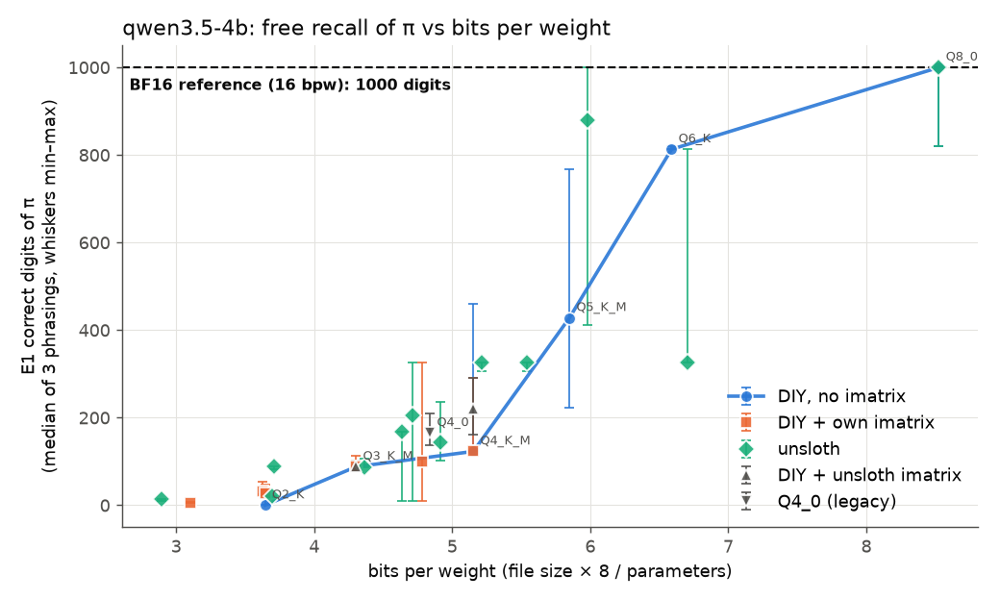
| Plain ladder | Bits/weight | π digits | Noise on π | Noise on random digits |
|---|---|---|---|---|
| BF16 (reference) | 16.0 | 1000 | 0 | 0 |
| Q8_0 | 8.5 | 1000 | 0.00013 | 0.00008 |
| Q6_K | 6.6 | 813 | 0.0011 | 0.0012 |
| Q5_K_M | 5.9 | 428 | 0.0075 | 0.0012 |
| Q4_K_M | 5.2 | 123 | 0.039 | 0.0033 |
| Q3_K_M | 4.3 | 88 | 0.35 | 0.0059 |
| Q2_K | 3.6 | 0 | 2.30 | 0.045 |
Memorized digits are fragile. At Q4_K_M the noise on π is 12 times the noise on random digits, and every bit removed multiplies it by 7.6, against 3.2 for random digits. Bits per weight are measured from each file. On this small model they run 0.3–0.4 above the format's name, because its large vocabulary layers stay at higher precision.
Errors start at a few near-tie digits
Feed the model the true digits one at a time, and at each position you can see how sure it was: how many times more likely the right digit was than the runner-up. BF16 gets all 1,000 positions right, and for a typical digit the right answer is about 10,000 times likelier. A handful of digits are nearly tied, though, and recall breaks there first. How teacher forcing works walks through these digits one by one.
- Of 77 π recitals that stopped early, the most common stopping points are positions 326 (8 times), 88 (7), and 821, 10, 87 and 123 (4 each). The typical stop sits at the 12th percentile of BF16's certainty.
- With few bits removed, only the most uncertain digits flip: Q6_K's two errors under teacher forcing are at 813 and 821. Q4_K_M's 14 sit around the 7.6th percentile. From Q3_K_M down the noise overwhelms most digits, and errors appear everywhere.
- Neighbouring builds can therefore score very differently. My Q6_K recites 813 digits and unsloth's Q6_K 326, with almost the same noise, because both teeter on digit 326 and only mine gets past it.

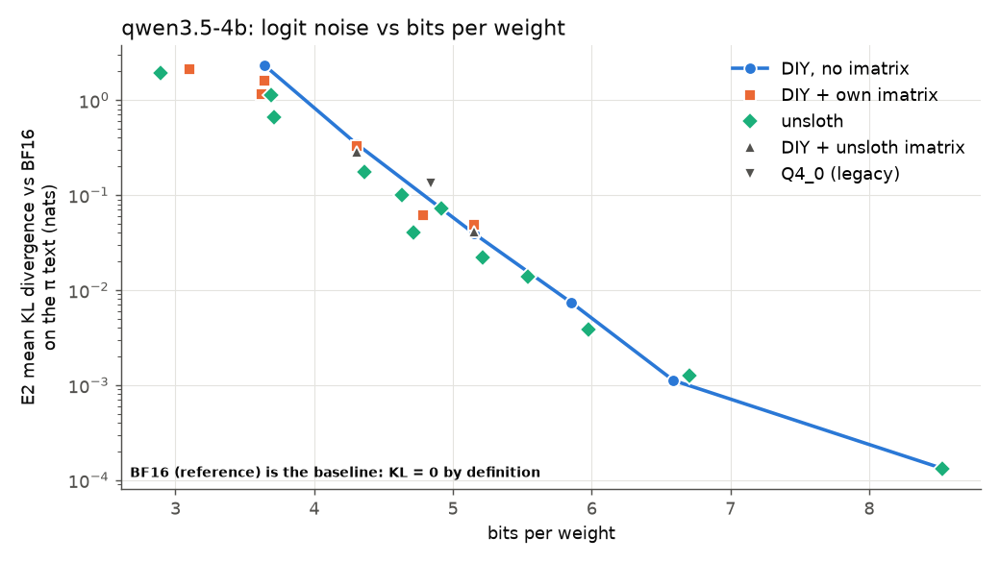
Copying holds, and it fails by skipping digits in runs
Copying digits (E3). The test has 40 random strings of 100 to 1,000 digits, and BF16 makes 3 errors in all 17,000. Every build at 4.3 bits per weight or more copies the 1,000-digit strings perfectly. Three builds break, and the same formats work when built another way:
| Version | Bits/weight | Errors / 100 digits | On 1,000-digit strings | What goes wrong |
|---|---|---|---|---|
| Q2_K, no imatrix | 3.6 | 59 | 99 | Gives up, mostly missing digits |
| IQ3_XXS, our imatrix | 3.6 | 9.0 | 36 | Drops whole chunks |
| IQ2_XS, our imatrix | 3.1 | 12 | 39 | Mixed |
| Q2_K + our imatrix | 3.6 | 0.06 | 0 | Works |
| unsloth UD-IQ3_XXS | 3.7 | 0.03 | 0 | Works |
Writing digits as words (E4b). Even BF16 drops digits, always inside runs. Strings with many runs get 2.2 errors per 100 digits, against 0.3 on ordinary random ones, and 75 of BF16's 80 errors are a missing word inside a run of three or more equal digits ("eight eight eight eight eight" written one short). Nothing changes down to about 4.3 bits per weight. Below that the failures turn into extra words as the model gets stuck repeating one. Wrong digits stay rare except in builds that collapse completely.
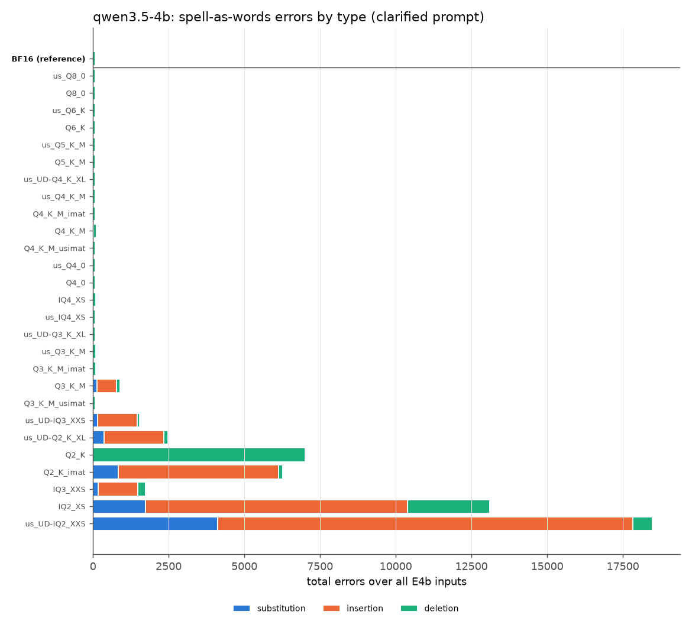
The first word prompt failed. E4 asked to "write each digit as an English word", and the model read that as "say this number" and answered "twenty trillion two hundred…", even at BF16. Those records are kept. E4b adds one example ("507 becomes: five zero seven") and replaces it in the results.
Format, imatrix and recipe all count
Each format was built several ways: a standard build with no imatrix, with my number-free imatrix, with unsloth's imatrix, and unsloth's published file.
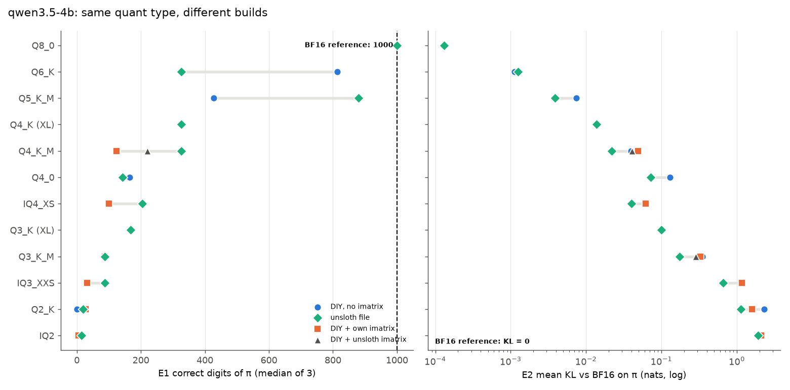
| Build of Q4_K_M | π digits | Noise on π | Noise on random |
|---|---|---|---|
| Standard, no imatrix | 123 | 0.039 | 0.0033 |
| + our number-free imatrix | 123 | 0.049 | 0.0016 |
| + unsloth's imatrix | 220 | 0.041 | 0.0024 |
| unsloth's file | 326 | 0.022 | 0.0019 |
| unsloth UD-Q4_K_XL (6% larger) | 326 | 0.014 | 0.0013 |
- Format. At the same size, the older Q4_0 has 3.3 times the noise on π of Q4_K_M.
- Imatrix. Mine comes from text without a single digit string. It halves generic noise at Q4_K_M and leaves π unprotected, where the noise even rises, since an imatrix protects what its sample text uses. At 2–3 bits it matters for everything. It separates a Q2_K that can't copy from one that can.
- Recipe. A standard Q4_K_M built with unsloth's imatrix gets little of unsloth's drop in noise (0.041 against 0.022 on π), and Q3_K_M shows the same (0.29 with their imatrix, 0.17 with their file). The rest comes from how unsloth sets the precision of each part of the model. Follow-up 3 shows that recall needs the recipe and their imatrix together.
Compression weakens memory's pull
E5 asks for an exact copy of π or e with one digit changed, and only position 10 of π separates the versions. BF16 and almost every build at 4.6 bits per weight or more "correct" it back to the real digit of π. Almost every build at 4.4 or below copies the prompt faithfully. H6 predicted the opposite. It fits H1, though: compression wears away memorized content, so memory competes less with the prompt.
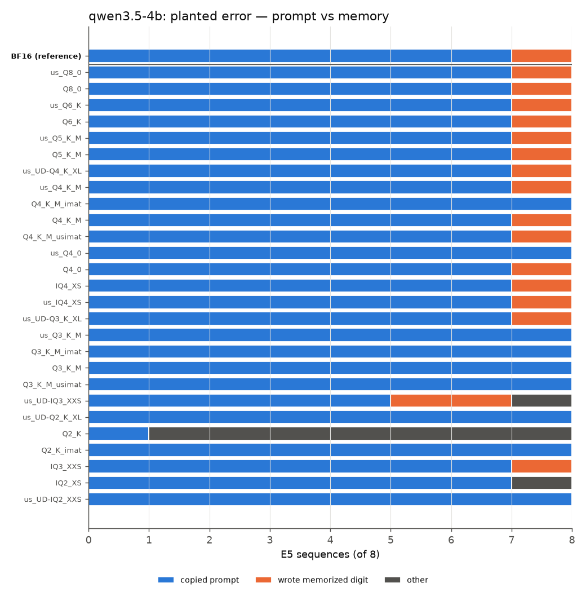
What it takes to run each build
One Arc Pro B60 (24 GB), llama.cpp with SYCL, room for 8,192 tokens of conversation. Writing speed is the middle value the server reported on the real test requests, within 0–5% of llama.cpp's own benchmark. Prompt speed comes from the benchmark at 4,096 tokens. Short prompts carry a fixed overhead on this backend that hides the real throughput.
| Version | File GB | VRAM GiB | Decode tok/s | Prompt tok/s | Power W |
|---|---|---|---|---|---|
| BF16 (reference) | 8.42 | 8.6 | 38 | 1,087 | 120 |
| Q8_0 | 4.48 | 4.9 | 65 | 2,964 | 127 |
| Q6_K | 3.46 | 4.0 | 76 | 2,984 | 147 |
| Q5_K_M | 3.07 | 3.6 | 81 | 3,092 | 142 |
| Q4_K_M | 2.71 | 3.3 | 89 | 2,807 | 138 |
| unsloth UD-Q4_K_XL | 2.91 | 3.5 | 78 | 2,838 | 132 |
| IQ4_XS | 2.51 | 3.1 | 65 | 2,223 | 130 |
| Q3_K_M | 2.26 | 2.9 | 85 | 2,332 | 139 |
| unsloth UD-IQ3_XXS | 1.95 | 2.6 | 35 | 1,674 | 113 |
| Q2_K | 1.92 | 2.5 | 91 | 2,617 | 136 |
| unsloth UD-IQ2_XXS | 1.52 | 2.2 | 53 | 1,693 | 129 |
- Graphics memory is the file size plus about 770 MiB for every build, the extra being conversation memory and working buffers. A 4 GB card fits everything up to Q5_K_M with an 8k context. BF16 needs about 9 GB.
- Below about 5 bits, smaller files stop getting faster. Writing goes 38 → 65 → 89 tokens/s from BF16 to Q8_0 to Q4_K_M, then stays flat down to Q2_K. Past that point a smaller file of a 4B model only saves memory.
- IQ formats are slow here. Unpacking their lookup tables costs more time than the smaller file saves, and UD-XL files write 12–28% slower than plain K-quants of a similar size.
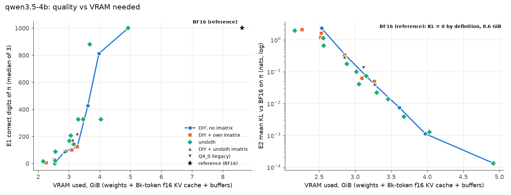
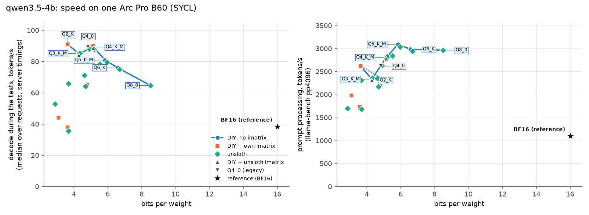
The 9B: no near-ties, sturdier copying
19 versions: unsloth's BF16 reference and 12 published files, my plain ladder from Q6_K to Q2_K, and Q2_K with my imatrix.
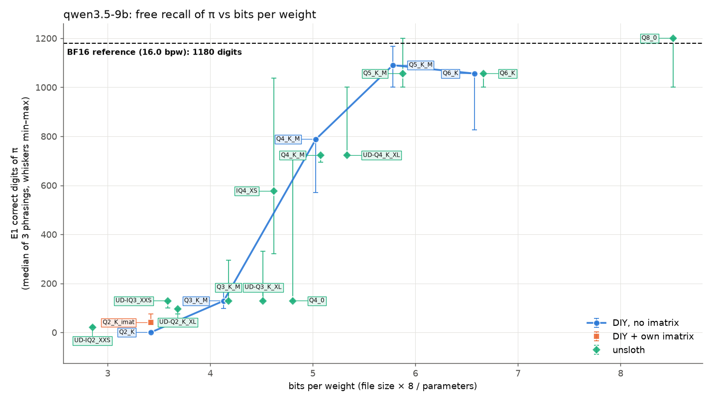
- Certainty. BF16's least certain digit of π is still 5 times likelier than the runner-up, against 1.1 times on the 4B. Certainty also climbs deeper into π, averaging about 700× over the first 100 digits and about 70,000× beyond digit 300. Recall still breaks on less certain digits. unsloth's Q4_K_M, UD-Q4_K_XL and Q4_0 all first go wrong at digit 722 (6th percentile).
- Copying. Every build from 3.4 bits per weight up copies at 0.03–0.07 errors per 100 digits, except plain Q2_K (34). The 4B's habit of repeating words in E4b at 3.6–4.3 bpw is gone. Only UD-IQ2_XXS still does it.
- Prompt against memory. The 9B's BF16 copies all 8 planted digits faithfully, and so does every build that can copy at all. Memory doesn't pull against the prompt, so compression has nothing to change.
- e and √2. Both models know exactly 192 digits of e when asked plainly. The 9B reads "e to 1000 decimal places: 2." as a numbered list and "e = 2." as Python code.
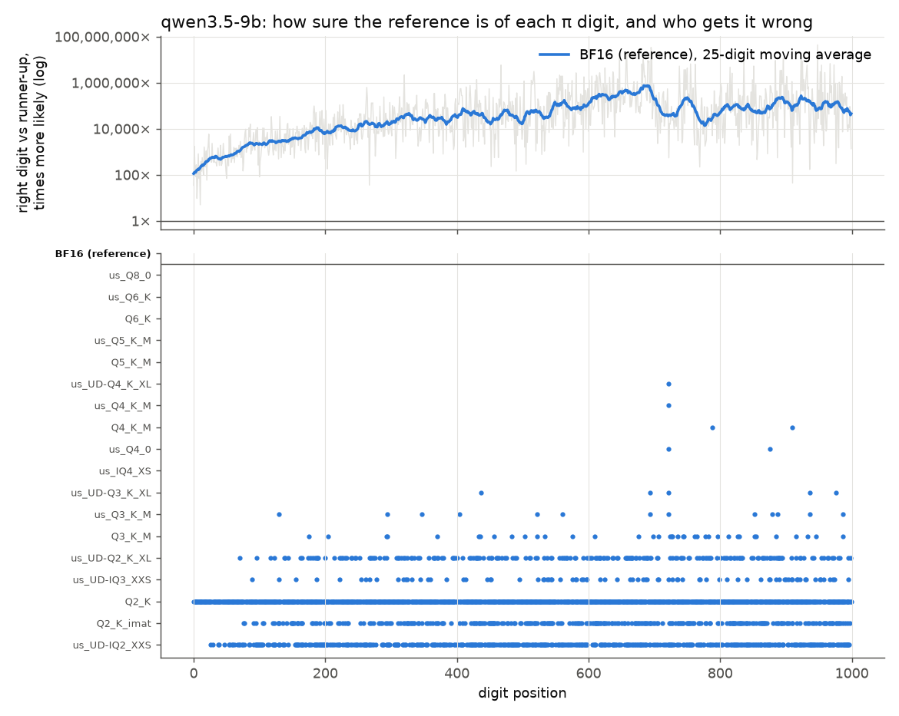
| 9B version | File GB | VRAM GiB | Decode tok/s | Prompt tok/s | π digits |
|---|---|---|---|---|---|
| BF16 (reference) | 17.92 | 15.7 | 22 | 593 | 1180 |
| unsloth Q8_0 | 9.53 | 8.7 | 42 | 1,964 | 1200 |
| Q6_K | 7.36 | 6.9 | 50 | 1,987 | 1056 |
| Q5_K_M | 6.47 | 6.2 | 53 | 2,067 | 1090 |
| Q4_K_M | 5.63 | 5.5 | 60 | 1,821 | 788 |
| unsloth IQ4_XS | 5.17 | 5.1 | 38 | 1,318 | 576 |
| Q3_K_M | 4.62 | 4.7 | 57 | 1,461 | 129 |
| unsloth UD-IQ3_XXS | 4.02 | 4.1 | 20 | 982 | 129 |
| Q2_K | 3.83 | 4.1 | 61 | 1,669 | 0 |
The 9B uses less graphics memory than its file size plus 770 MiB, because it keeps its input vocabulary table separate from its output layer, and llama.cpp leaves that table in ordinary memory. Q4_K_M fits an 8 GB card with an 8k context. Writing stops getting faster below about 5 bits, as on the 4B, and is 1.5–1.7 times slower. The full write-up is in REPORT_9B.md.
The 27B: knows less π, holds it longer
17 versions: unsloth's Q8_0 as the reference, 10 more unsloth files, my plain ladder from Q6_K to Q2_K, and Q2_K with my imatrix. The three largest files run split across both cards.
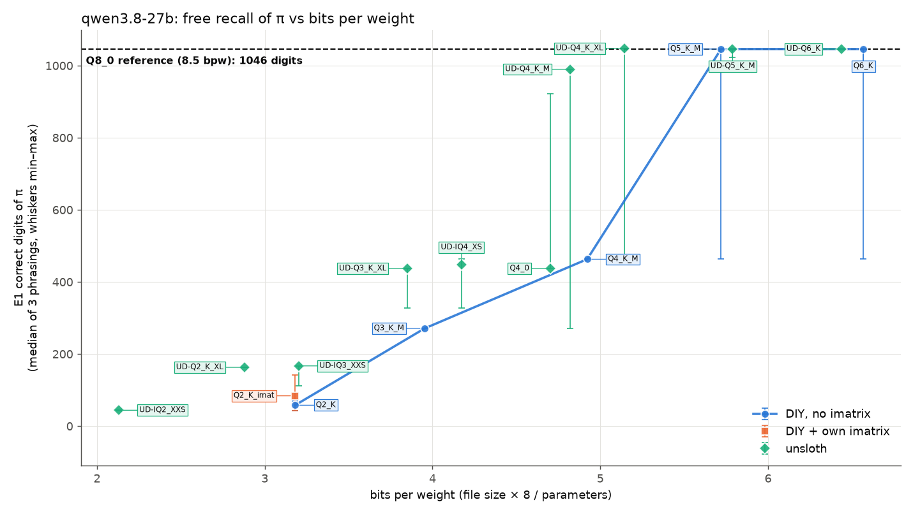
- A limit of memory, unrelated to compression. Q8_0 stops at digit 1,046 of π in two wordings, writing
8979…after…2796823030where π goes on1952…. Every build down to 5.1 bits stops on the same digit. The 9B gets past it, so the bigger, newer model has memorized less π. - Certainty predicts the steps. π recall moves in steps (990, 463, 437, 271, 167, 163), and each is the first digit that build gets wrong under teacher forcing. The typical stop sits at the 2nd percentile of Q8_0's certainty.
- The recipe matters below 5 bits. unsloth's UD-Q4_K_M has half the noise on π of my Q4_K_M and recites 990 digits against 463, while at 5–6 bits the builds are level.
- Copying is the strongest of the three models. Plain Q2_K copies 17,000 digits without an error, and only UD-IQ2_XXS (2.1 bits) drops any. Every build copies all 8 planted digits.
- Reciting as words works. Asked for π in English words, Q8_0 stays right for 46 digits ("one four one five nine…"). The smaller models only produced fragments.
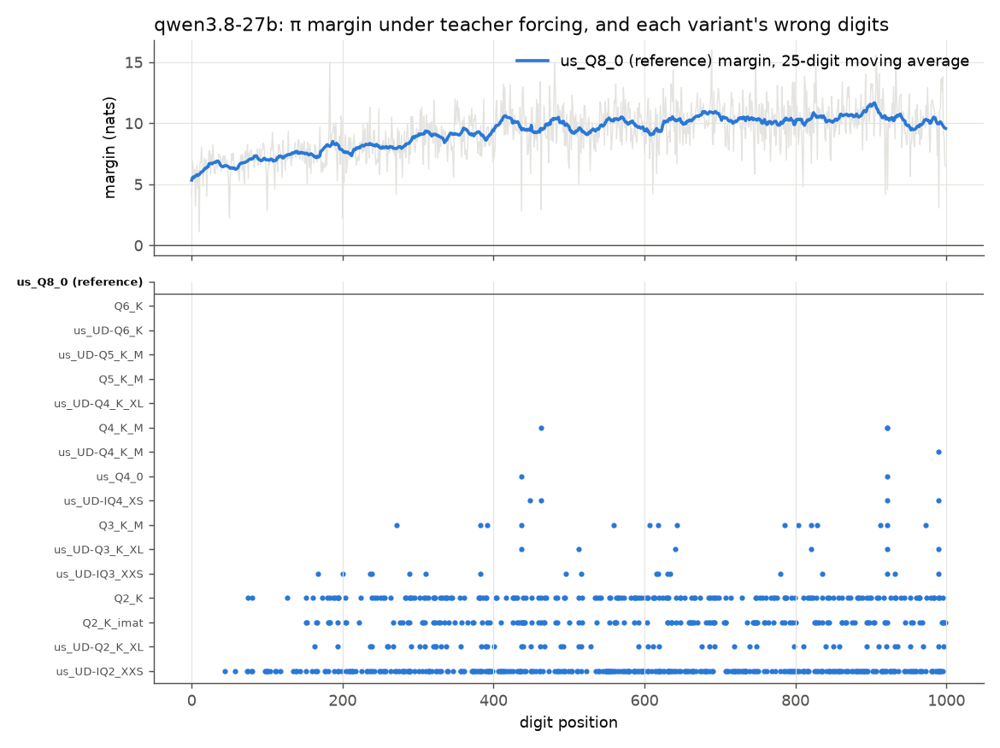
| 27B version | Cards | File GB | VRAM GiB | Decode tok/s | Prompt tok/s | π digits |
|---|---|---|---|---|---|---|
| unsloth Q8_0 (reference) | 2 | 29.05 | 27.7 | 13 | 1,093 | 1046 |
| Q6_K | 2 | 22.43 | 21.9 | 17 | 1,098 | 1046 |
| Q5_K_M | 1 | 19.54 | 18.5 | 18 | 687 | 1046 |
| unsloth UD-Q4_K_M | 1 | 16.46 | 15.7 | 15 | 502 | 990 |
| Q4_K_M | 1 | 16.81 | 16.1 | 22 | 594 | 463 |
| Q3_K_M | 1 | 13.50 | 13.2 | 20 | 459 | 271 |
| unsloth UD-IQ3_XXS | 1 | 10.93 | 10.8 | 8 | 327 | 167 |
| Q2_K | 1 | 10.86 | 11.0 | 22 | 539 | 58 |
Versions split over two cards report memory and power summed over both, and splitting doesn't make writing faster, since the cards take turns layer by layer. One card holds Q5_K_M and below with an 8k context. The 27B loads without mapping its file into memory, because mapping a 22–29 GB file on a 30 GB machine ran it out of memory. Full write-up: REPORT_27B.md.
Bigger models take more compression, counted in bits
The same plain ladder, built the same way, on three models. The "cliff" is the build with the most bits whose π recall falls below half of the reference's, and it lands at Q5_K_M (5.9 bits per weight) on the 4B, Q3_K_M (4.1) on the 9B and Q4_K_M (4.9) on the 27B. At Q5_K_M both bigger models still recite π as far as their references, while the 4B is down to 428 digits. The 27B also comes from a newer generation (Qwen 3.8). Size and generation change together.
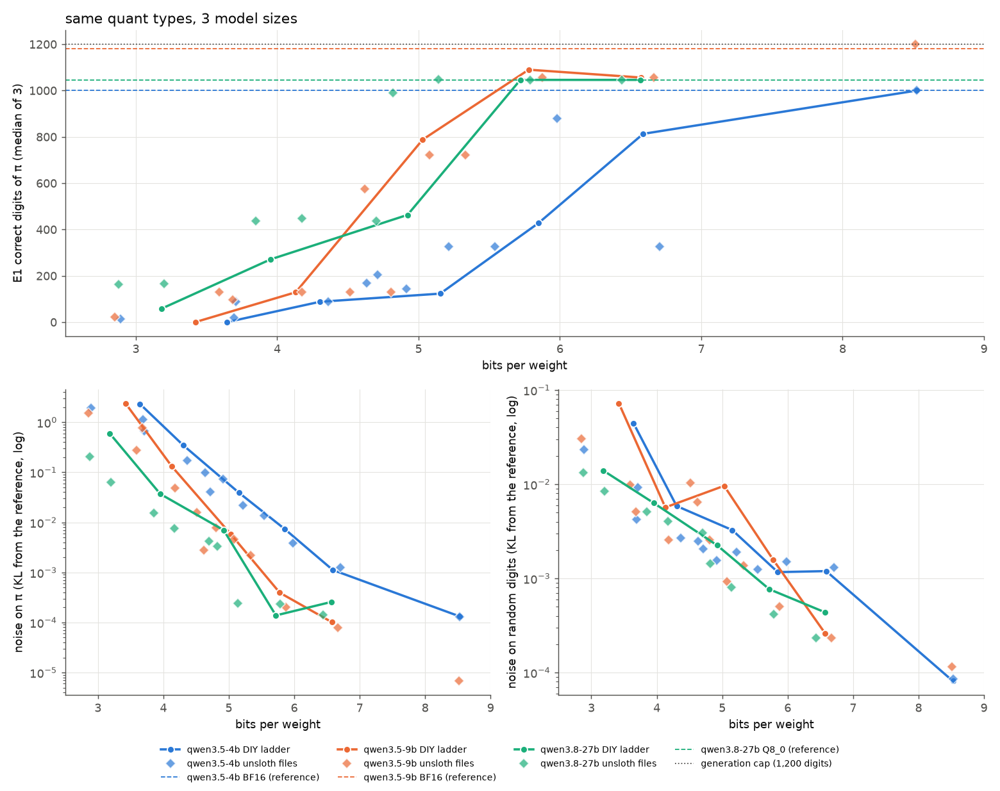
| Plain ladder | 4B π digits | 4B noise on π | 9B π digits | 9B noise on π | 27B π digits | 27B noise on π |
|---|---|---|---|---|---|---|
| reference | 1000 | 0 | 1180 | 0 | 1046 | 0 |
| Q8_0 | 1000 | 0.00013 | 1200 | 0.000007 | (reference) | |
| Q6_K | 813 | 0.0011 | 1056 | 0.00010 | 1046 | 0.00026 |
| Q5_K_M | 428 | 0.0075 | 1090 | 0.00039 | 1046 | 0.00014 |
| Q4_K_M | 123 | 0.039 | 788 | 0.0058 | 463 | 0.0070 |
| Q3_K_M | 88 | 0.35 | 129 | 0.13 | 271 | 0.037 |
| Q2_K | 0 | 2.30 | 0 | 2.39 | 58 | 0.60 |
Teacher forcing shows the order most clearly. Fed the true digits, how many of π's first 1,000 does each version get wrong? It counts against π itself, so every reference scores 0. The 4B goes wrong first. The 9B and 27B are level down to Q4_K_M, and below that the 27B degrades slowest.
| Plain ladder | 4B wrong digits | 9B wrong digits | 27B wrong digits |
|---|---|---|---|
| Q6_K | 2 | 0 | 0 |
| Q5_K_M | 2 | 0 | 0 |
| Q4_K_M | 14 | 2 | 3 |
| Q3_K_M | 104 | 38 | 15 |
| Q2_K | 882 | 903 | 170 |
- At 5–6 bits the 27B is no quieter than the 9B. Both sit at a noise of 0.0001–0.0004 on π, well below the 4B (0.001–0.008).
- From 4 bits down the 27B pulls ahead. Its noise on π is 3.5 times below the 9B's at Q3_K_M, and at Q2_K, where the two smaller models end up level, it sits 4 times below both. It also recites the most π of the three at Q3_K_M (271) and Q2_K (58).
- The cliff follows the uncertain digits. The 27B's Q4_K_M has the 9B's level of noise, yet it first breaks at digit 463, where the reference was only 18 times surer of the right digit than the runner-up. The 27B has 6 digits under 20×, the 9B 2.
A quick noise test predicts recall, if it is measured on π
Recall costs nine long requests per version and answers in big steps. Noise comes from one teacher-forced pass. It's a smooth number. Across the 61 compressed versions of all three models, more noise on π means fewer digits recited, with a rank correlation of −0.96 within each model, and every tenfold drop in noise buys about 3.2 times as many digits.
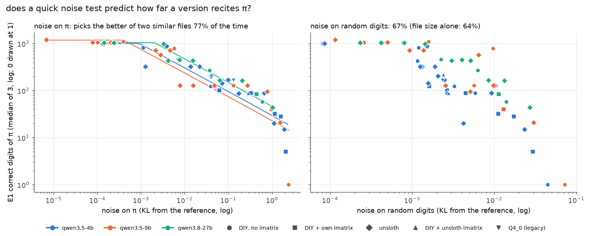
| Choosing between two files within 0.5 bpw, by | Picks the one that recites more |
|---|---|
| Lower noise on π | 76 of 99 (77%) |
| Lower noise on random digits | 66 of 99 (67%) |
| Larger file | 63 of 99 (64%) |
Generic noise adds 3 points over file size, and noise on π adds 13. Where the fit misses, one digit decided everything. Noise sets how often digits flip, and which one goes first is partly luck.
Certainty forecasts sampling, and temperature 1 caps the 4B
Every other test here is greedy. Chat apps sample, so I compared two numbers for six versions of the 4B and five of the 9B, at temperature 1 and at chat settings (temperature 0.7, top-k 20, top-p 0.8).
- Measured
- Real runs. The server, with the version loaded and the sampler set, recited π 64 times (seeds 1 to 64), and each run was stopped at its first wrong digit. The figure is the mean number of correct digits over the 64 runs.
- Forecast
- No sampling at all. One teacher-forced pass feeds the model the prompt and the 1,000 true digits and records its probabilities for the next token at every digit. At each digit I apply the sampler's trimming in llama.cpp's order (top-k, then top-p, then temperature) and read off the chance a single draw picks the right digit. A run still correct at digit n has seen exactly the text teacher forcing fed in, so the chance of getting the first n digits right is the product of those per-digit chances. Summed over all 1,000 digits, that curve gives the expected number of correct digits.
Take position 10 on the 4B's BF16, where the right digit gets 0.73 and the runner-up 0.18. At temperature 1 the forecast curve drops by about a quarter there, while a digit the model gives 0.99 barely moves it.
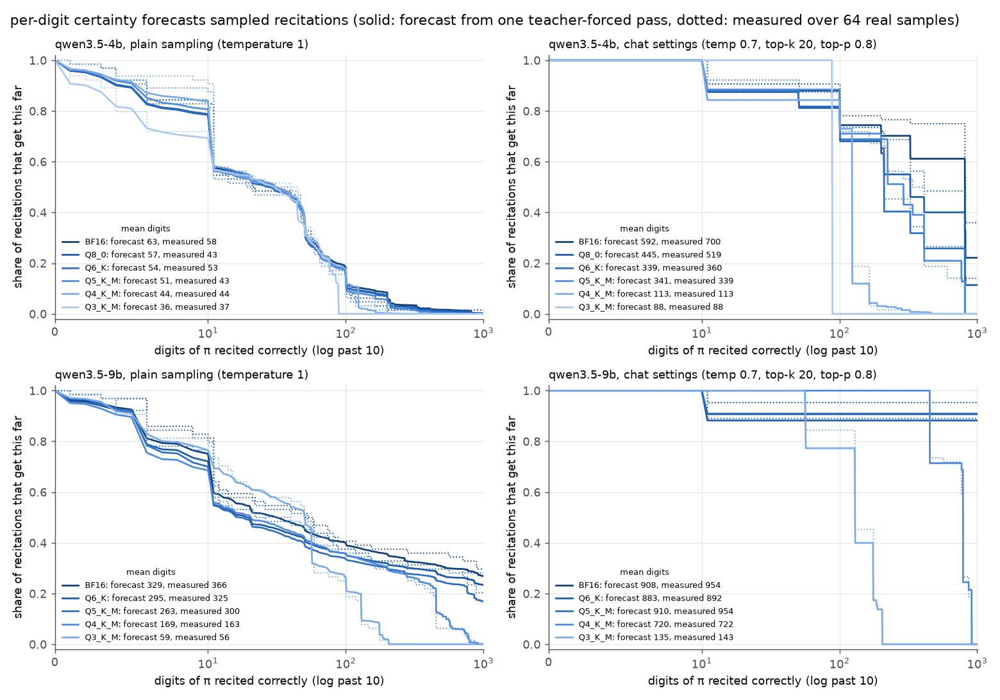
| Version | Greedy | Temp 1, forecast / measured | Chat, forecast / measured |
|---|---|---|---|
| 4B BF16 | 1000 | 63 / 58 | 592 / 700 |
| 4B Q6_K | 813 | 54 / 53 | 339 / 360 |
| 4B Q4_K_M | 123 | 44 / 44 | 113 / 113 |
| 9B BF16 | 1000 | 329 / 366 | 908 / 954 |
| 9B Q5_K_M | 1000 | 263 / 300 | 910 / 954 |
| 9B Q4_K_M | 788 | 169 / 163 | 720 / 722 |
| 9B Q3_K_M | 175 | 59 / 56 | 135 / 143 |
- At temperature 1 the 4B can't recite π at any size. Around 45% of samples from every version have gone wrong by digit 10, where even BF16 gives the right digit only 0.73. Going from BF16 to Q4_K_M moves the mean from 58 to 44.
- The 9B mostly can. 19 of 64 BF16 samples finish all 1,000 digits, and compression shows up again. Q4_K_M halves the mean.
- Chat settings stay close to greedy. Once the right digit has 80%, top-p 0.8 drops every runner-up, so only near-ties carry risk. The 9B down to Q5_K_M completes all 1,000 digits in 57–61 of 64 samples.
- The forecast reads low for BF16 and Q8_0 at chat settings. In the single pass the 4B's BF16 gives digit 326 a probability of 0.780, and writing token by token 0.816, so the 0.8 cut falls between the two.
unsloth's edge is its imatrix plus more bits on linear attention
unsloth's Q4_K_M of the 4B recites 326 digits of π and a standard Q4_K_M of nearly the same size recites 123. 24 of the 4B's 32 layers use linear attention. Stock llama.cpp stores their parts at the base type, while unsloth keeps ssm_out and attn_qkv at 5 bits and two small gates at 8. I rebuilt their file one change at a time.

attn_qkv, ssm_out, ssm_alpha, ssm_beta) all sit in the blue panel. Each part is explained on How the model files were made.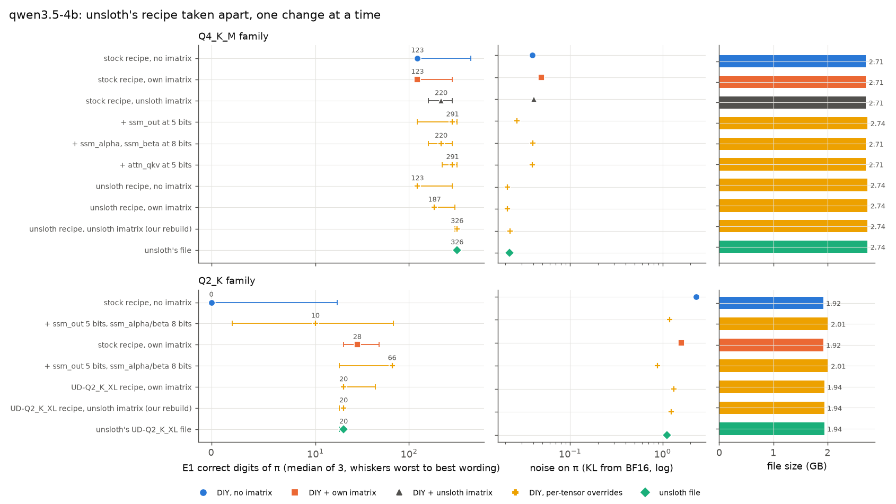
| 4B build | File GB | π digits | Noise on π |
|---|---|---|---|
| Standard Q4_K_M | 2.71 | 123 | 0.039 |
| + unsloth's imatrix | 2.71 | 220 | 0.041 |
… + ssm_out at 5 bits | 2.74 | 291 | 0.027 |
… + attn_qkv at 5 bits | 2.71 | 291 | 0.039 |
| unsloth's recipe, no imatrix | 2.74 | 123 | 0.021 |
| unsloth's recipe + our imatrix | 2.74 | 187 | 0.021 |
| unsloth's recipe + unsloth's imatrix | 2.74 | 326 | 0.022 |
| unsloth's file | 2.74 | 326 | 0.022 |
Q2_K + our imatrix, ssm_out 5 bits, gates 8 bits | 2.01 | 66 | 0.88 |
| unsloth's UD-Q2_K_XL file | 1.94 | 20 | 1.12 |
- The rebuild matches unsloth's file exactly, in recitations, in the digits it misses under teacher forcing, and in noise.
- The recipe halves noise on π, and recall also needs the right imatrix. Without one, the recipe still flips digit 123. With unsloth's imatrix the first error moves out to 326, where BF16 itself was only 3.8 times sure.
- At 2 bits a simpler build wins. Standard Q2_K with our imatrix and the linear-attention parts raised recites 66 digits to unsloth's 20. It copies digits spelled as words with 1 error per 100 where unsloth's file makes 28, and writes 89 tokens/s to 66. unsloth's file keeps less noise on random digits.
- For your own Qwen 3.5 builds:
--tensor-type ssm_out=q5_Kcosts about 1% of the file and halves noise on π.
The full write-up of all three follow-ups is in REPORT_FOLLOWUP.md.
How it was measured
The setup checks passed for every model, and my Q8_0 and unsloth's Q8_0 of the 4B sit at the same noise from BF16 (0.00013), so the pipeline adds no error of its own. The test prompts, teacher forcing step by step, the settings and the problems found along the way are on their own pages.
Open questions
- Keep E6? It gave nothing on the 4B and 9B and measures something on the 27B.
- Build the imatrix from "ordinary text plus some numbers"? Follow-up 3 points there for unsloth's remaining edge.
- Do the
ssm_outandattn_qkvchanges help the 9B and 27B as much as the 4B? - Do uncertain digits cluster where π is usually broken into blocks (positions 10, 50, 100, 200)?